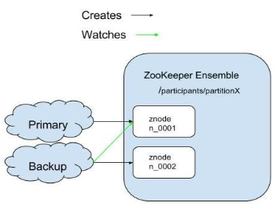

In distributed computing, consistency-biased leader election is established using an odd number of coordinators (usually 3). Having an odd number ensures that if network segmentation occurs, there will be no draw between the segments - the majority of coordinators (e.g. 2) will be in one segment, and the minority (e.g. 1) in the other. This allows each segment to play its role and ensure consistency:
In
Apache ZooKeeper is a centralized service providing distributed synchronization, which can be used for various use cases in distributed systems such as leader election, configuration, distributed locks and more. It is highly reliable and widely used across the industry, both in open source projects such as Apache HBase and Apache Kafka), and by large companies such as Yahoo and Rackspace.
You don't have to download or setup Apache Zookeeper. It comes packaged with
When a space is deployed on an environment managed by a Manager, consistency-biased leader election is automatically enabled.
The default configuration is valid for most environments and applications. You can change it if you need to decrease/increase failover time (the time it takes from when a primary fails to when a backup accepts leadership in its place), using the following Space properties (can also be provided as a JVM System property):
| Property | Description | Default |
|---|---|---|
space-config.leader-election.zookeeper.connection-timeout
|
Connection timeout (in milliseconds) | 5000 |
space-config.leader-election.zookeeper.session-timeout
|
Session timeout (in milliseconds) | 15000 |
space-config.leader-election.zookeeper.retry-timeout
|
Retry policy maximum elapse timeout | Integer.MAX_VALUE |
space-config.leader-election.zookeeper.retry-interval
|
Interval between retries (in milliseconds) | 100 |
ZooKeeper connections have sessions that are maintained on each heartbeat. The connection timeout applies to an API call, while the session timeout applies to network partition incidents.
A new election takes place only in the presence of a ZooKeeper quorum. A backup Space in the quorum is elected primary when the primary Space session expires.
When a session expires, the primary Space suspends its activity until a quorum is reestablished. After the network partition is resolved, the primary Space resolves its state, terminating if a primary Space has already been elected.
A primary Space may resume activity only if its session has not yet expired. Otherwise it terminates and becomes re-instantiated as a backup Space by the managing GSM.
The failover time (of a backup Space until it is elected as primary) is a function of the session timeout plus the time it takes for the state to change. On a LAN network, this has been measured on average to be 35 seconds with the above default settings. This is twice as fast as Lookup-Service-based election.
A shorter failover time is not always advantageous. It may cause short network disconnections to trigger unnecessary failovers, which can affect system stability. Change the defaults only after careful consideration, and adjust the values to suit your network capabilities and applicative requirements.

The following occurs during leader election:
The Apache Zookeeper leader selector prevents split-brain instances through quorum. If the primary Space is not in the majority, that Space is frozen (or quiesced) until the network is connected and the frozen primary Space is terminated automatically.